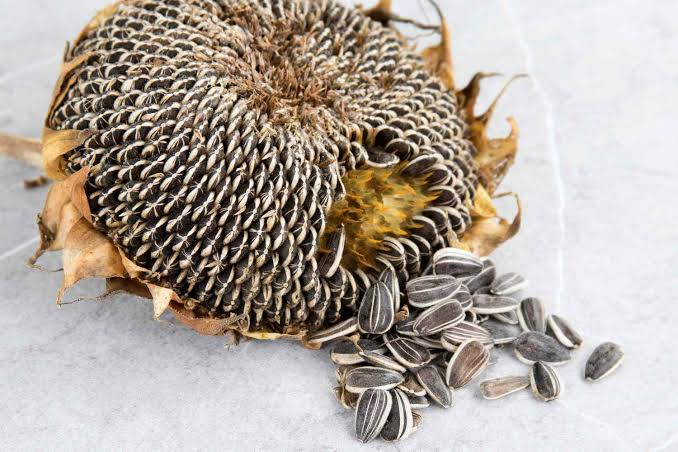
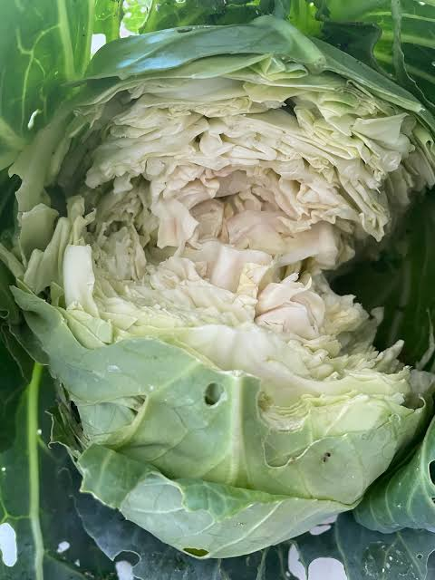
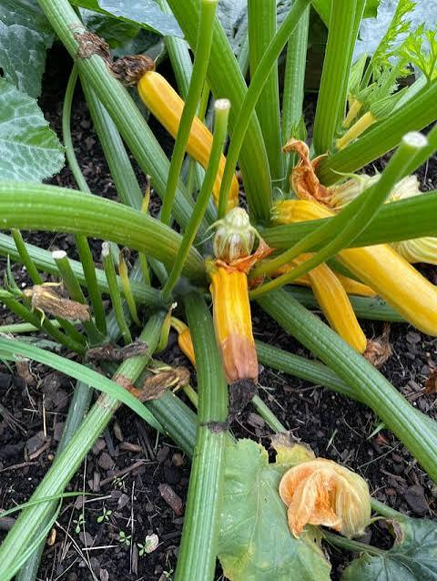
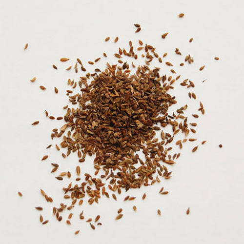

Some plants are hard to grow but I grow them anyways. click here to see all the beauty.



Vegetables such as Cabbage in the fall and winter can be tricky. One warm week and your vegetables will "bolt" right to seed. Too much water and they absorb it like a sponge and split open. Carrot seeds are so small its hard to plant with enough spacing in order to let the carrot grow